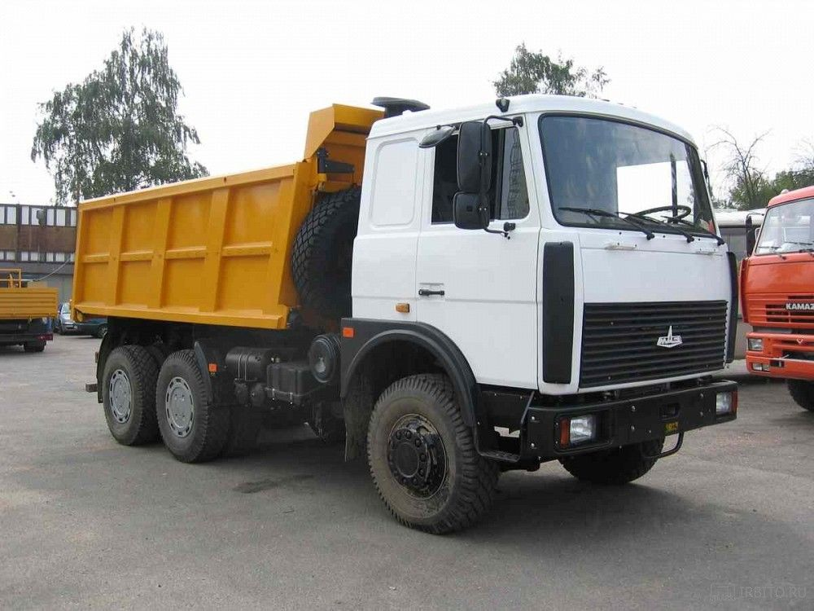

Собственная и привлечённая техника для земляных работ, перевозки сыпучих материалов, погрузки и монтажа. Предоставляем технику с опытными операторами для работы на наших объектах и по отдельным заявкам.
Самосвалы, грузовая техника и экскаваторы

СамосвалСамосвалы (20 тонн)Перевозка песка, щебня, гравия и грунта, вывоз строительного мусора..jpg) СамосвалТяжёлые самосвалы (30–40 тонн)Трёх- и четырёхосные машины для вывоза грунта при разработке котлованов.
СамосвалТяжёлые самосвалы (30–40 тонн)Трёх- и четырёхосные машины для вывоза грунта при разработке котлованов..jpg) Кран-манипуляторГрузовые машины с КМУПогрузка, перевозка и разгрузка блоков, плит и колец ЖБИ.
Кран-манипуляторГрузовые машины с КМУПогрузка, перевозка и разгрузка блоков, плит и колец ЖБИ..jpg) ЭкскаваторГусеничные экскаваторыКотлованы и земляные работы, в том числе на слабых и переувлажнённых грунтах.
ЭкскаваторГусеничные экскаваторыКотлованы и земляные работы, в том числе на слабых и переувлажнённых грунтах..jpg) ЭкскаваторКолёсные экскаваторыТраншеи под инженерные сети, работа на стеснённых городских площадках.
ЭкскаваторКолёсные экскаваторыТраншеи под инженерные сети, работа на стеснённых городских площадках..jpg) ПогрузчикЭкскаваторы-погрузчикиПогрузка мусора, обратная засыпка, планировка участка.
ПогрузчикЭкскаваторы-погрузчикиПогрузка мусора, обратная засыпка, планировка участка.Для каких работ
Котлованы
Разработка котлованов под фундаменты и подземные сооружения.
Траншеи под сети
Копка траншей под водопровод, канализацию, кабельные линии.
Вывоз грунта и мусора
Вывоз разработанного грунта и строительного мусора с площадки.
Сыпучие материалы
Доставка песка, щебня, гравия и грунта на объект.
Погрузка и монтаж ЖБИ
Погрузка, перевозка и разгрузка блоков, плит и колец ЖБИ.
Планировка и засыпка
Обратная засыпка пазух и траншей, планировка территории.
Как заказать
Позвоните и назовите вид работ, объём и адрес площадки — подберём технику и согласуем время подачи и стоимость смены.